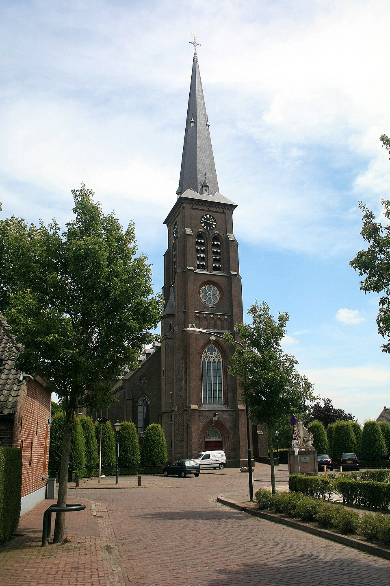
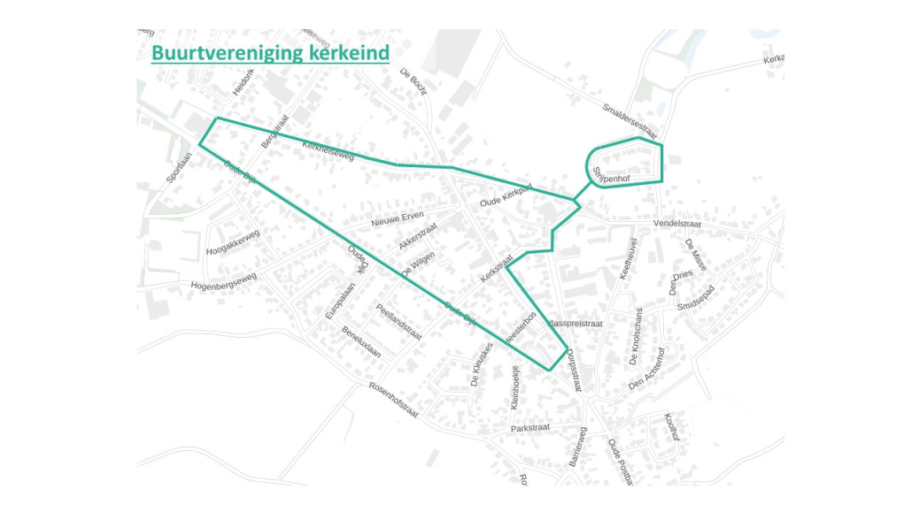

AL SINDS 1970 BIJ ELKAAR
Een fijne buurt.
Dat maken
we samen.
Een praatje op straat, iets leuks ondernemen en naar elkaar omkijken. Welkom bij Kerkeind, onze buurtvereniging in Liempde.
Voor jong, oud en iedereen daartussen.

ONZE VERENIGING
Groot in
kleine gebaren.
Kerkeind is al sinds 1970 een plek waar buurtgenoten elkaar ontmoeten. We organiseren activiteiten voor alle leeftijden en hebben aandacht voor wie wel een bezoekje of wat extra gezelligheid kan gebruiken.
Ook denken we via het wijkorgaan Liempde mee over de leefbaarheid van ons dorp. Want een fijne buurt begint bij de mensen die er wonen.
Meer over de verenigingEVEN BIJPRATEN?
We zien je graag.
Benieuwd wat er op de planning staat?
In onze agenda vind je de activiteiten van de buurt.
Doe gezellig mee.
Samen iets ondernemen maakt de buurt nóg leuker. Een idee voor een activiteit? Laat van je horen!
Deel je idee
OM DE HOEK
Ons stukje
Liempde.
Vertrouwde straten, bekende gezichten en altijd wel iemand om een praatje mee te maken. Dit is de buurt van Kerkeind.
Nieuw in de buurt? Neem gerust contact op om kennis te maken met de vereniging.
Maak kennis met KerkeindDE DEUR STAAT OPEN
Een vraag, een idee
of gewoon even hallo?
Stuur een berichtje naar ons secretariaat.
We horen graag van je.